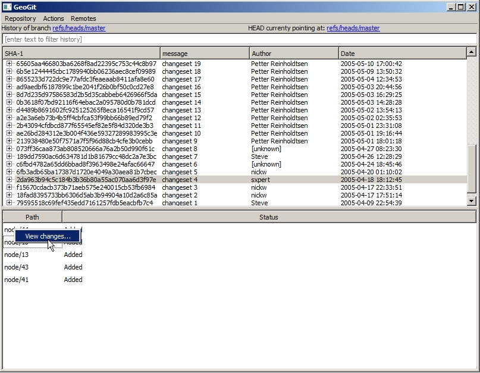
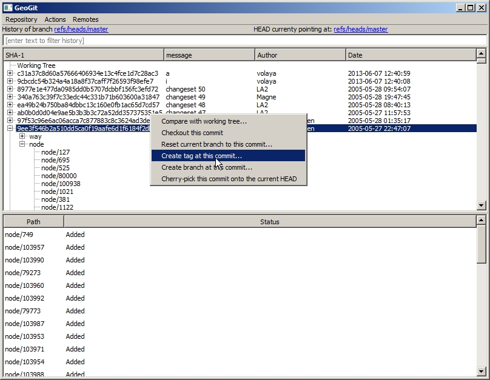
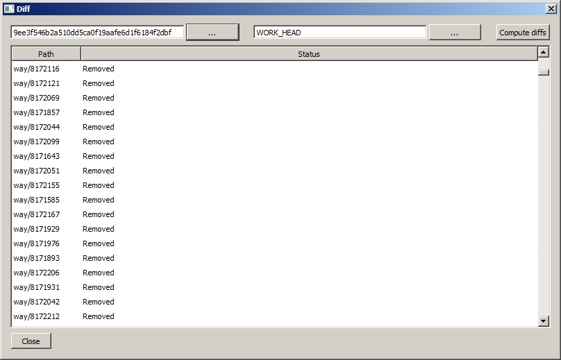
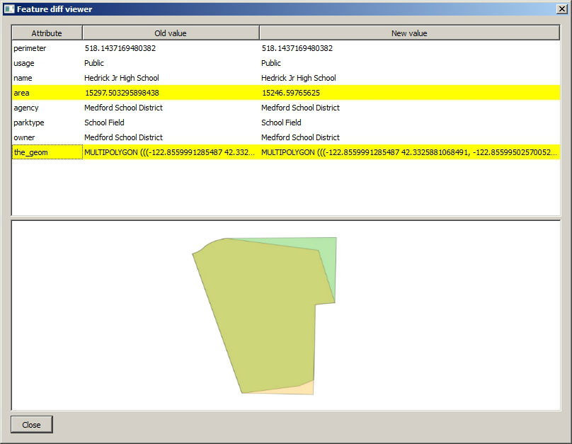

GeoGit + OSM
Using GeoGit with OpenStreetMap
Distributed Versioned Spatial Data Editing

Intro
GeoGit is a distributed version control system for geographic information. It is heavily inspired by the git distributed version control system [1] design and principles, adapting them to the differences in the problem domain.
[1] It has no formal relationship with the git project and is not built on top of git.
Adapted to geospatial data
Commands are similar to Git ones, but with a different behaviour adapted to the particular data being versioned.
$ geogit diff --nogeom
6350a6... 6350a6... 37d757... e0c9ec... M parks/22
the_geom: 0 point(s) deleted, 1 new point(s) added, 3 point(s) moved
parktype: "Garden" -> "Park"
6350a6... 6350a6... 887b4a... fad2fa... M parks/12
the_geom: 0 point(s) deleted, 0 new point(s) added, 18 point(s) moved
Branches
- Branches are easy to create
- Good for analyzing what-if scenarios
- They can later be merged or rebased
$ geogit merge mybranch
$ geogit rebase mybranch
Conflicts
GeoGit detects conflicts when merging or rebasing.
$ geogit merge mybranch
CONFLICT: Merge conflict in parks/2
CONFLICT: Merge conflict in parks/3
CONFLICT: Merge conflict in parks/1
Automatic merge failed. Fix conflicts and then commit the result.
$geogit rebase branch1
Error: could not apply 0b0e33b Changed units in area field
CONFLICT: conflict in parks/5
When you have fixed this conflicts, run 'geogit rebase --continue' to continue rebasing.
If you would prefer to skip this commit, instead run 'geogit rebase --skip.
To check out the original branch and stop rebasing, run 'geogit rebase --abort'
$ geogit conflicts --diff
---parks/parks.2---
Ours
number_fac: 0 -> 5
Theirs
number_fac: 0 -> 2
the_geom: MultiPolygon [-122.99,42.42 -122.1,42.68 -122.52,42.96 -122.4,42.794 -122.76,42.82] (-122.2,42.57 -122.33,42.216 -122.26,42.12 -122.14,42.556) -122.17,42.71 -122.43,42.17 -122.54,42.426 -122.96,42.71 -122.84,42.54 -122.2,42.57
Conflict resolution
Limited to command-line interface. Not much interactivity.
$ geogit checkout --theirs
A graphical three-way merge tool is on its way...
OSM functionality in GeoGit commands
- Commands that replace common GeoGit commands with OSM-specific versions
- Commands with additional extra functionality for working with OSM data
OSM GeoGit commands
- osm import
- osm download
- osm map
- osm export-shp / osm export-pg / osm export-sl
- osm unmap
- osm create-changeset
OSM data in a GeoGit repository
- All OSM data is stored in a fixed destination ('way' and 'node' trees) and using fixed schemas
- OSM commands assume this data structuring
- Aside from that, it can be stored anywhere in the repository, and handled as any other data, but OSM-specific functionality will not be available.
- Data mappings allow to use OSM data in a GeoGit repository with a custom schema different to the default one
Import data from OSM
Osmosis-based data importing
$ geogit osm import myosmdata.pbf
Download using Overpass API
Uses Overpass Query Language
$ geogit osm download --filter myquery.txt
Quick BBox query
$ geogit osm download --bbox 40 -2 40.02 -1.88
Updating
GeoGit logs usage of download command so it can match a commit to the OSM changeset it represents.
This can be used to smartly update the current OSM data in the repository, considering new changes introduced in the local repository.
$ geogit download --update
Updating(2)
Similar to the GeoGit pull command.
Update can be done merging or rebasing.
$ geogit download --update --rebase
If changes have been made to the repository and conflicts exist, the merge/rebase operation will detect and signal them, just like it does with non-OSM data during a pull operation.
Limitations of update
- The operation is not optimal, as it downloads the whole current snapshot, not just new entities.
- newer clause in Overpass API does not report deletions
- OSM API does not allow for flexible filtering when fetching history
- We need the best of both worlds (history + filtering).
Data mappings
Working with OSM data in a different schema (= easier and more practical)
Makes it easier to edit versioned OSM data in an external app (GIS) and update the repository data
Data mappings
- Similar to Imposm mappings
- JSON definition
{"rules":
[
{
"name":"onewaystreets",
"filter":{
"oneway":["yes"]
},
"fields":{
"lit":"STRING",
"geom":"LINESTRING"
}
}
]
}
Data mappings. How to use them
Creating new trees in the repository with mapped OSM data
$ geogit osm map mymapping.json
Exporting mapped OSM data to Shapefile/PostGIS/Spatialite
$ geogit osm export-shp mapped.shp --mapping mymapping.json
Data mappings. Unmapping
Reconstruct OSM object in the canonical trees from mapped data
$ geogit osm unmap mapped_tree
Workflow with mapping
- Download/update OSM data
- Export a mapped version of the data to edit.
- Edit in your favorite software.
- Import changed data into GeoGit repository.
- Unmap (this will update the canonical OSM data in the repo)
- Commit to create a new snapshot.
- Update to merge changes from OSM planet (if any).
Changesets
Changesets can be created with the create-changeset command.
Similar to the diff command, but works only on OSM data in the repository.
$ geogit creat-changeset HEAD HEAD~3 -f mychangeset.xml
Further improvements
- Better unmapping for ways.
- Handle relations
- Contribute to OSM planet from GeoGit (create a push command)
Beyond the CLI
- GeoServer integration.
- QGIS plugin



